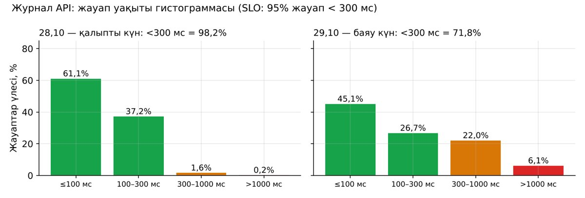
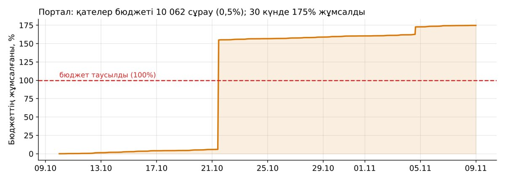
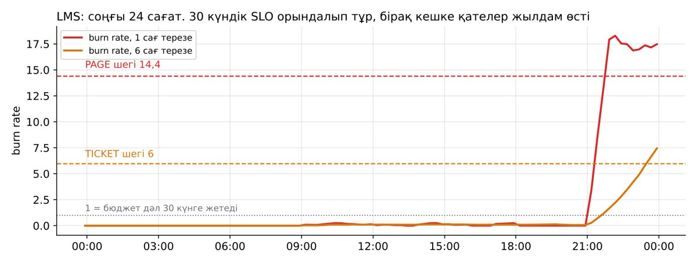
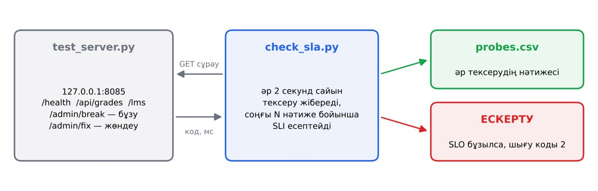

ПРАКТИКАЛЫҚ ЖҰМЫС №10
Қызмет көрсету сапасын автоматты тексеру (SLA)
SLA, SLO, SLI, жауап уақыты мен қателерді есептеу, қателер бюджеті, burn rate және қызметтерді үздіксіз тексеру.
1. SLI, SLO, SLA
Қызмет «жақсы жұмыс істеді ме?» деген сұраққа сезіммен емес, санмен жауап беру керек. Ол үшін үш ұғым қолданылады:
SLI — индикатор
Нақты өлшенген мән. Мысалы: соңғы 30 күндегі сәтті сұраулар үлесі = 99,87%.
SLO — мақсат
Команданың ішкі мақсаты. Мысалы: 30 күнде қолжетімділік ≥ 99,9%.
SLA — келісім
Клиентпен келісімшарт: мақсат және бұзылса не болады (айыппұл, өтемақы). Мысалы: ≥ 99,5%, әйтпесе 15% қайтарылады.

2. SLI түрлері
| SLI | Формула | Мысал |
|---|---|---|
| Қолжетімділік | (барлық сұраулар − 5xx қателер) / барлық сұраулар | 99,87% |
| Жауап уақыты (latency) | 300 мс-тан жылдам жауаптар / барлық сұраулар | 97,1% сұрау < 300 мс |
| Қателер үлесі | 5xx / барлық сұраулар | 0,13% |
| Өнімділік (throughput) | секундтағы сұраулар | 120 RPS |
5xx (500, 502, 503) — сервердің кінәсі, SLI-ге кіреді. 4xx (404, 401) — клиенттің қатесі (қате мекенжай, құпиясөз), әдетте SLI-ге кірмейді.
3. «Тоғыздықтар» және рұқсат етілген тоқтау уақыты
| SLO | 30 күнде тоқтауға болады | Жылына |
|---|---|---|
| 99% | 7 сағ 12 мин | 3,65 күн |
| 99,5% | 3 сағ 36 мин | 1,8 күн |
| 99,9% («үш тоғыз») | 43 мин | 8,8 сағ |
| 99,99% («төрт тоғыз») | 4 мин 19 с | 53 мин |
Формула: (1 − SLO) × 30 × 24 × 60 минут. Әр қосымша «тоғыз» қызметті 10 есе қымбат етеді, сондықтан 100% — дұрыс мақсат емес.

4. Жауап уақытын қалай өлшейміз?
Орташа мән алдайды: 95 сұрау 50 мс, 5 сұрау 4 секунд болса, орташа = 250 мс — «жақсы» сияқты, бірақ әр 20-шы пайдаланушы 4 секунд күтеді. Сондықтан перцентильдер қолданылады:
- p50 (медиана) — сұраулардың жартысы осыдан жылдам;
- p95 — 95%-ы осыдан жылдам; «баяу» пайдаланушылардың тәжірибесі;
- p99 — ең баяу 1%.
Мониторинг жүйелері (Prometheus) әр сұрауды сақтамайды — жауап уақытын гистограмма бакеттеріне санайды:
le_100 ≤ 100 мс : 612
le_300 ≤ 300 мс : 361
le_1000 ≤ 1000 мс : 21
gt_1000 > 1000 мс : 6 → 97,3% сұрау 300 мс-тан жылдам
5. Қателер бюджеті және burn rate
Қателер бюджеті — SLO рұқсат ететін «жаман» сұраулар саны:
бюджет = (1 − SLO) × барлық сұраулар
мысалы: (1 − 0,995) × 2 000 000 = 10 000 жаман сұрау / 30 күнБюджет қалса — жаңа функциялар шығаруға болады. Бюджет бітсе — команда жаңалықтарды тоқтатып, тұрақтылыққа көшеді. Бұл — SRE (Site Reliability Engineering) тәсілі.
Burn rate — бюджеттің жұмсалу жылдамдығы:
burn rate = (соңғы кезеңдегі қате үлесі) / (1 − SLO)
1,0 → бюджет дәл 30 күн соңында бітеді
14,4 → бюджеттің 2%-ы 1 сағатта, бәрі ~2 күнде бітеді| Ескерту | Терезе | Шарт | Әрекет |
|---|---|---|---|
| PAGE | 1 сағат | burn rate ≥ 14,4 | кезекшіге дереу хабарлау |
| TICKET | 6 сағат | burn rate ≥ 6 | жұмыс уақытында тексеру |
Неге 30 күндік SLI жеткіліксіз? Ол «баяу»: қызмет дәл қазір бұзылып жатса да, 30 күндік орташа әлі жақсы көрінеді. Burn rate қазіргі жағдайды көрсетеді.


6. SLA-ны үздіксіз тексеру
Сервер метрикалары
Нақты пайдаланушылардың барлық сұраулары. Бірақ сервер мүлдем құласа — метрика да жоқ.
Синтетикалық тексеру
Скрипт белгілі аралықпен сұрау жібереді (health check). Тоқтауды бірден көреді, бірақ тек бір жолды тексереді.
# 1-терминал: тексеруге арналған қызмет
python test_server.py --errors 0.02 --slow 0.05
# 2-терминал: үздіксіз тексеру
python check_sla.py --interval 2 --count 40
# cron: әр 10 минут сайын 30 рет тексеріп, SLA есебін жаңарту
*/10 * * * * cd ~/10_sla_monitor && python3 check_sla.py --interval 10 --count 30Нақты құралдар: Prometheus + Blackbox exporter, Grafana, Uptime Kuma, UptimeRobot. Біздің скрипттер — олардың шағын, түсінікті үлгісі.

Бейне дыбыссыз, субтитрлері бар (1:26).
Бастапқы код (10_sla_monitor қалтасы) сабақта оқытушыдан беріледі. Қалай іске қосу керек:
# 1. VS Code-та File → Open Folder → 10_sla_monitor
# 2. VS Code ішінде терминал ашыңыз: Terminal → New Terminal
# 3. README.txt ішіндегі командаларды орындаңыз, мысалы:
python main.py # Mac-та: python3 main.py| Мақсаты | SLA, SLO, SLI метрикаларын ажыратуды, сервис жауабы мен қателерден SLI, қателер бюджеті мен burn rate есептеуді және қызметтерді үздіксіз тексеретін скриптпен жұмыс істеуді үйрену. |
| Оқыту нәтижелері | 1. SLA/SLO/SLI метрикаларын сипаттайды. 2. Сервис жауабы мен қателерді есептеуді түсіндіреді. 3. SLA-ны үздіксіз тексеретін скрипт жазады. |
| Уақыты | 150 минут (6 сағаттық тақырыптың практикалық бөлігі, 3 сабақ) |
| Жұмыс түрі | Жеке немесе жұппен; әр студент өз нұсқасын орындайды (нұсқа нөмірін оқытушы береді) |
| Қажетті құралдар | Компьютер, VS Code (екі терминал), Python 3.10+, 10_sla_monitor қалтасы, браузер |
Жағдаят
Колледждің үш онлайн қызметі бар: колледж порталы, электронды журнал API және оқу платформасы (LMS). Әр қызметке ішкі сапа мақсаты (SLO) және қызмет көрсетуші компаниямен келісімшарт (SLA) бекітілген. Ай соңында директор: «Қызметтер уәде етілген сапада жұмыс істеді ме? Айыппұл талап ете аламыз ба? Дәл қазір бір нәрсе бұзылып жатқан жоқ па?» деп сұрады. Сіз 30 күндік метрикаларды талдап, қызметтерді үздіксіз тексеретін скрипт іске қосуыңыз керек.
Жұмысқа дайындық
- VS Code-та 10_sla_monitor қалтасын ашып, терминалды іске қосыңыз.
- Метрикаларды жасаңыз:
python gen_metrics.py→ data/metrics.csv. - Есеп файлын ашып, тақырыбын, аты-жөніңізді, тобыңызды және нұсқа нөмірін жазыңыз.
Тапсырмалар
1-тапсырма. SLA, SLO, SLI және рұқсат етілген тоқтау уақыты (15 мин, 10 ұпай)
services.jsonфайлын ашыңыз. Әр қызмет үшін кесте толтырыңыз: қызмет → SLO (қолжетімділік, жауап уақыты) → SLA → айыппұл → жауапты.- Неге SLA мақсаты SLO-дан төмен қойылған? Керісінше болса не болар еді?
- 30 күндік рұқсат етілген тоқтау уақытының кестесін есептеңіз: 99%, 99,5%, 99,9%, 99,99% (минутпен және сағатпен). Формула: (1 − SLO) × 30 × 24 × 60.
- Неге 4xx қателері (404, 401) SLI-ге кірмейді, ал 5xx қателері кіреді?
Есепке: қызметтер кестесі, тоқтау уақыты кестесі, жауаптар.
2-тапсырма. SLI есептеу (25 мин, 15 ұпай)
- data/metrics.csv құрылымын жазыңыз: requests, errors_5xx, errors_4xx, le_100, le_300, le_1000, gt_1000 нені білдіреді?
- Есепті алыңыз:
python sli.py. Әр қызмет үшін: қолжетімділік, жылдам жауаптар үлесі, SLO және SLA күйі. - Нұсқаңыздағы күн үшін қолжетімділікті қолмен есептеңіз (Excel: сүзгі → requests пен errors_5xx қосындысы; немесе қысқа Python кодымен): SLI = (requests − errors_5xx) / requests × 100.
- Нәтижені
python sli.py --service <қызмет> --dailyкестесімен салыстырыңыз.
| Нұсқа | Қызмет | Қолмен есептелетін күн |
|---|---|---|
| 1, 4 | portal | 2026-10-21 |
| 2, 5 | journal_api | 2026-10-30 |
| 3, 6 | lms | 2026-11-08 |
Есепке: sli.py нәтижесі, қолмен есептеу, салыстыру.
3-тапсырма. Инциденттер және қателер бюджеті (25 мин, 20 ұпай)
python sli.py --service portal --dailyжәне--service journal_api --dailyіске қосыңыз. ⚠ белгісі бар күндерді тауып, инциденттер кестесін толтырыңыз: күн → қызмет → не бұзылды (қателер / баяулық) → 5xx саны.- Қателер бюджеті дегеніміз не? Портал үшін бюджет қанша сұрау және ол қанша пайызға жұмсалды?
- 12-күнгі (2026-10-21) 90 минуттық тоқтау порталдың бюджетінің шамамен қанша пайызын «жеді»? Есептеу жолын көрсетіңіз.
- Журнал API-дің 2026-10-29 күнгі мәселесі қолжетімділікке емес, неге әсер етті? Ол 30 күндік латенттік SLO-ны бұзды ма?
- Порталдың SLO-сы бұзылды, бірақ SLA сақталды. Бұл нені білдіреді: айыппұл бар ма, команда не істеуі керек?
Есепке: инциденттер кестесі, бюджет есептеулері, жауаптар.
4-тапсырма. Burn rate және ескертулер (20 мин, 15 ұпай)
- services.json-дағы alerts бөлімін оқыңыз. Burn rate формуласын жазыңыз және 1,0 / 6 / 14,4 мәндері нені білдіретінін түсіндіріңіз.
- LMS-тің 30 күндік SLO-сы орындалып тұр, бірақ sli.py PAGE ескертуін береді. Неге?
- «Қазір» уақытын өзгертіп көріңіз:
python sli.py --service lms --now "2026-11-08 20:00"және--now "2026-11-08 22:00". Burn rate қалай өзгерді? - Порталдың тоқтау уақытында (
--now "2026-10-21 11:00") ескерту шығар ма еді? Тексеріп, нәтижесін жазыңыз. - Неге бір ғана терезе (мысалы, тек 1 сағат) емес, екі терезе қолданылады?
Есепке: burn rate есептеулері мен нәтижелері, жауаптар.
5-тапсырма. Үздіксіз тексеру (20 мин, 15 ұпай)
- Бірінші терминалда тест қызметін іске қосыңыз:
python test_server.py --errors 0.02 --slow 0.05. - Екінші терминалда үздіксіз тексеруді бастаңыз:
python check_sla.py --interval 2 --count 60 --window 10(2 секунд сайын, барлығы 60 тексеру, қолжетімділік соңғы 10 тексеру бойынша есептеледі). - Тексеру жүріп жатқанда браузерде http://127.0.0.1:8085/admin/break ашыңыз (қызметті «бұзу»), 20 секундтан кейін /admin/fix ашыңыз. Ескерту қашан шықты және қашан жоғалды? Неге ескерту қызмет қалпына келгеннен кейін бірден емес, біраз уақыттан соң жоғалады (--window параметрі)?
- probes.csv файлын ашып, тоқтау кезеңін тауып, оның ұзақтығын есептеңіз.
- Синтетикалық тексеру мен 2-тапсырмадағы сервер метрикаларының айырмашылығы қандай? Әрқайсысы нені көрмейді?
Есепке: check_sla.py шығысының скриншоттары, тоқтау ұзақтығы, жауаптар.
6-тапсырма. Жеке нұсқа: скриптті жетілдіру (30 мин, 15 ұпай)
| Нұсқа | Тапсырма | Нәтижені тексеру |
|---|---|---|
| 1 | check_sla.py-ге «қатарынан 3 рет сәтсіз болса — ҚЫЗМЕТ ТОҚТАДЫ, сәтті болса — ҚАЛПЫНА КЕЛДІ» хабарын және тоқтау ұзақтығын есептеуді қосыңыз. | break/fix кезіндегі хабарлар |
| 2 | check_sla.py-ге ескертуді alerts.log файлына жазуды қосыңыз (уақыт, қызмет, себебі) және бір ескертуді 1 минут ішінде қайталамайтын ету. | alerts.log мазмұны |
| 3 | sli.py-ге p99 бағасын және «≤300 мс» шегін параметр --latency арқылы өзгертуді қосыңыз (мысалы 100, 300, 1000). | әртүрлі шектегі латенттік SLI |
| 4 | sli.py-ге қателер бюджетінің қалған бөлігін минутпен көрсетуді қосыңыз: «бюджет бойынша тағы X минут толық тоқтауға болады». | есептегі жаңа жол |
| 5 | sli.py-ге апта сайынғы (7 күндік) қолжетімділік кестесін --weekly параметрімен қосыңыз. | апталық кесте |
| 6 | check_sla.py-ге --json параметрін қосыңыз: соңында қорытындыны summary.json файлына жазсын (қызмет, сәтті үлесі, p95, ескертулер саны). | summary.json файлы |
Есепке: өзгертілген код үзінділері (алдында / кейін), нәтиже скриншоттары, 2–3 сөйлем түсіндірме.
Есептің мазмұны
- Титул: тақырып, аты-жөні, тобы, нұсқа нөмірі, күні.
- 1–6-тапсырмалардың нәтижелері (кестелер, есептеулер, скриншоттар, код үзінділері).
- sla_report.html есебінің скриншоты (
python sli.py --html) және тексеруді кесте бойынша іске қосу жолы (cron немесе schtasks). - Қорытынды: 3–5 сөйлем.
Бағалау парағы
| № | Критерий | Ұпай |
|---|---|---|
| 1 | SLA, SLO, SLI ажыратылған; тоқтау уақыты кестесі есептелген | 10 |
| 2 | SLI есептелген; бір күн қолмен есептеліп, скриптпен салыстырылған | 15 |
| 3 | Инциденттер табылған; қателер бюджетіне әсері есептелген | 20 |
| 4 | Burn rate есептеліп, ескертулер түсіндірілген | 15 |
| 5 | Үздіксіз тексеру іске қосылып, тоқтау мен қалпына келу көрсетілген | 15 |
| 6 | Жеке нұсқа бойынша скрипт жетілдірілген | 15 |
| 7 | Бақылау сұрақтарына жауап, есепті қорғау | 10 |
| Барлығы | 100 |
Бағалау шкаласы: 90–100 ұпай — «5» (өте жақсы); 70–89 — «4» (жақсы); 50–69 — «3» (қанағаттанарлық); 0–49 — «2» (қанағаттанарлықсыз).
Бақылау сұрақтары
- SLA, SLO және SLI дегеніміз не? Олардың айырмашылығы неде?
- Қолжетімділік SLI-і қалай есептеледі? Қандай қателер есепке алынады?
- SLO 99,9% болса, 30 күнде қанша минут тоқтауға болады?
- Неге жауап уақытын бағалауда орташа мән емес, перцентиль (p95, p99) қолданылады?
- Гистограмма бакеттері дегеніміз не және олардан p95 қалай бағаланады?
- Қателер бюджеті дегеніміз не? Ол бітсе команда не істеуі керек?
- Burn rate қалай есептеледі? 14,4 мәні нені білдіреді?
- Синтетикалық мониторинг пен нақты пайдаланушы метрикаларының (RUM) айырмашылығы қандай?
- SLA бұзылса не болады? Мысал келтіріңіз.
- SLA тексеруін қалай автоматтандыруға болады (кесте, шығу коды, ескерту)?
Журнал файлдары берілген. ls, cat, grep, sort, uniq, cut командаларымен тергеу жүргізіп, жауапты submit flag{...} түрінде жіберіңіз. Командалар тізімі: help.
Есепті (docx, pdf немесе zip) жүктеңіз немесе GitHub / Google Drive сілтемесін қалдырыңыз. Баға мен оқытушының пікірі кабинетте шығады.